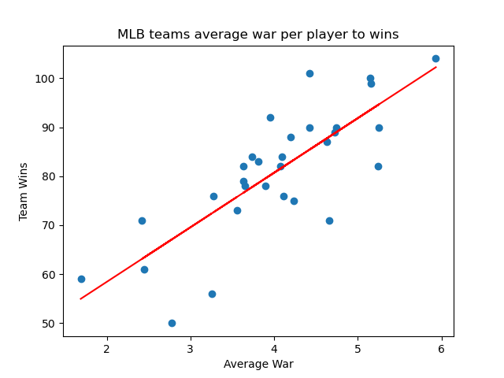
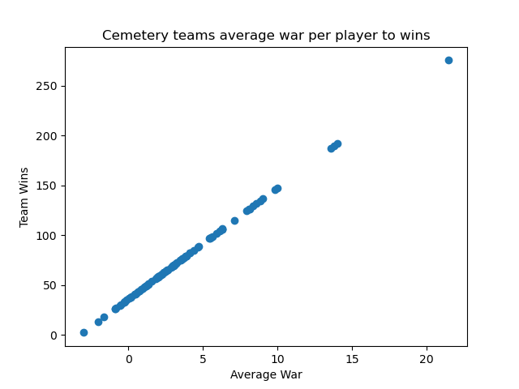

The genesis of this project was the biographical dataset that I found on retrosheet.com, in this .csv file there was the biographical data for every professional baseball player to ever play in the major leagues and along with stuff like birthdays and age and other sections one might expect to find in a list of biographical data there was also a column that listed the known cemetery for each of the players who have passed, and with such data the question was raised about which cemetery in america has the best baseball team buried within it.
As said in the introduction all of the data for the cemetery where each player is buried was found at retrosheet.org in their biographical data section. Retrosheet as an organization began back in 1989 to computerize the play by play box scores of all baseball games but has since stored all types of data about baseball. Although they do not say how they collected the burial data of all the players it can be assumed they found it from one of the other obituary databases. There are many databases for obituaries as well as cemeteries with one of the largest being findagrave.com. The cemetery location is not complete for the entire list of players as obituary data is very hard to trace especially from a pre-computerized society however it is a very impressive list of 10017 known cemeteries of former mlb players.
,PLAYERID,LAST,FIRST,NICKNAME,BIRTHDATE,BIRTH.CITY,DEATHDATE,CEMETERY,CEME.CITY,CEME.STATE,CEME.COUNTRY,CEME.NOTE,BIRTH.NAME,NAME.CHG,BAT.CHG,HOF
1,aaronha01,Aaron,Henry Louis,Hank,02/05/1934,Mobile,01/22/2021,Southview Cemetery,Atlanta,Georgia,USA,,,,,HOF
2,aaronto01,Aaron,Tommie Lee,Tommie,08/05/1939,Mobile,08/16/1984,Catholic Cemetery,Mobile,Alabama,USA,,,,,
6,abadijo01,Abadie,John W.,John,11/04/1850,Philadelphia,05/17/1905,St. Denis Cemetery,Havertown,Pennsylvania,USA,,,,,
7,abbated01,Abbaticchio,Edward James,Ed,04/15/1877,Latrobe,01/06/1957,St. Mary Cemetery,Latrobe,Pennsylvania,USA,,,,,
8,abbeybe01,Abbey,Bert Wood,Bert,11/11/1869,Essex,06/11/1962,Mountain View Cemetery,Essex Junction,Vermont,USA,,,,,
9,abbeych01,Abbey,Charles S.,Charlie,10/14/1866,Falls City,04/27/1926,Steele Cemetery,Falls City,Nebraska,USA,,,,,
11,abbotda01,Abbott,Leander Franklin,Dan,03/16/1862,Portage,02/13/1930,Weston Cemetery,Weston,Ohio,USA,,,,,
12,abbotfr01,Abbott,Harry Frederick,Fred,10/22/1874,Versailles,06/11/1935,Pierce Brothers' Valhalla Memorial Park,North Hollywood,California,USA,,Harry Frederick Winbigler,,,
19,abbotod01,Abbott,Ody Cleon,Ody,09/05/1886,New Eagle,04/13/1933,Monongahela Cemetery,Monongahela,Pennsylvania,USA,,,,,
22,aberal01,Aber,Albert Julius,Al,07/31/1927,Cleveland,05/20/1993,Cremated- interred in West Park Cemetery,Cleveland,Ohio,USA,,,,,
24,abernbi01,Abernathie,William Edward,Bill,01/30/1929,Torrance,02/19/2006,Montecito Memorial Park,Colton,California,USA,,,,,
25,aberscl01,Aberson,Clifford Alexander,Cliff,08/28/1921,Chicago,06/23/1973,Suisun-Fairfield Cemetery,Fairfield,California,USA,,,,,
26,abercda01,Abercrombie,Francis Patterson,Frank,01/02/1850,Fort Towson,11/11/1939,Cremated,,,,,,,,
28,abernja01,Abernathy,Robert William,Robert,07/12/1917,Maury County,09/02/1997,Woodlawn Memorial Park & Mausoleum,Nashville,TN,USA,,,,,
29,abernte02,Abernathy,Theodore Wade,Ted,03/06/1933,Stanley,12/16/2004,Gaston Memorial Park,Gastonia,North Carolina,USA,,,,,
30,abernte01,Abernathy,Talmadge Lafayette,Ted,10/30/1921,Bynum,11/16/2001,Olney Presbyterian Church Cemetery,Gastonia,North Carolina,USA,,,,,
32,abernwo01,Abernathy,Virgil Woodrow,Woody,02/01/1915,Forest City,12/05/1994,Resthaven Memorial Park,Louisville,Kentucky,USA,,,,,
above is a section of the csv from retrosheet
It is important to note that the prevalence of cemetery databases is a contentious issue with many cases of the administrators of these databases not acting in accordance to the wishes of the deceased's family who might not wish to have their families burial information out in the public for anyone to find. I did think of these when coming up with the project but decided that while these cemetery databases might not always be ethical most of the data from retrosheet most likely came from public obituaries seeing how many of the players were public figures that were more likely to have obituaries published in accordance to the families wishes.
At this point I now had a list of 10017 baseball players where their burial location is known. However this information included players who were cremated and as the final resting place of the ashes were often not known I decided to remove those all together. And then I decided to remove all the players who were buried in a cemetery that did not have 11 players buried there. I chose 11 not only because it would narrow it down to a more manageable number of players but also it would be a more legitimate case to see which cemetery had the best team so each cemetery should in theory have 9 batters a pitcher and one guy on the bench while others might have a lot more.
now that I had a list of every player that was buried in a cemetery with at least 11 other players I needed a countable stat that could be a proxy for a players talent where when summed together with the other players could be a proxy for the teams talent. The stat I chose to collect war Wins Above Replacement (or WAR), War was the best option to choose as the goal of the WAR stat according to baseball-reference.com “The idea behind the WAR framework is that we want to know how much better a player is than a player that would typically be available to replace that player”. So in theory a players war is equal to the amount of wins that player is likely to give a team over a “replacement” level player whose war would be 0. So with the war stat chosen I then had to find each of the 1600 players WAR and then compare the total WAR of each of the 96 cemeteries and in theory the highest one would be the cemetery with the best baseball team in it. To get the WAR stat I made a script that would scrape baseball-reference.com for each of the players. I chose baseball reference as it is the largest repository of baseball player stats I could find. In order to make my scraper more efficient I needed to know the unique id that baseball reference gives each player, luckily I had the retro sheet id of each player from the biography csv and there exists a baseball stat python library called pybaseball (for more on pybaseball see documentation at https://github.com/jldbc/pybaseball ) that has a function that converts retrosheet ids to bbref ids, unfortunately the library did not have an efficient way to collect war stats so I had to use my scraper. It is important to always follow a website's terms of service when web scraping as I was sure to do when gathering the war data.
def find_war(name_tuple):
url = "https://www.baseball-reference.com/" + lname[0] + "/" + name[0] + ".shtml"
response = requests.get(url)
if response.status_code == 200:
player_soup = BeautifulSoup(response.text, 'html.parser')
elif response.status_code == 429:
with open("cem_dict.json", "w") as f:
json.dump(cems_dict, f, indent=4)
print("429d")
exit()
else:
return -5.0
player_soup = (player_soup.find("div", class_="p1")).find("p")
war = player_soup.getText()
return war
above is the code for the scraper that found the WAR for each player
It is important to note that since much of the baseball data is coming from the early 1900’s when baseball was still segregated at the time and while baseball-reference and retrosheet are currently updating their respective databases to include black players much of the data is still missing due to a lack of care and preservation from the racist institutions that would preserve data back then. So since much of the data from the original file is from a segregated league it is wrong to say that the findings are the best players of the time as the data mostly includes only white players while the black baseball players of the time have had their stats erased.
Now that we have the stats for each player we can sum the total war of each cemetery and sort it in reverse order to find which cemetery has the highest total war, which we do in the following python script.
import json
with open ("cem_dict_final.json","r") as f:
war_dict = json.load(f)
#print(type(war_dict))
war_list = []
for keys in war_dict:
cem_tuple=()
sum = 0
for el in war_dict[keys]:
i = war_dict[keys].index(el)
try:
sum+= float(war_dict[keys][i][1])
except ValueError:
sum += 0
cem_tuple = (keys,sum,sum/len(war_dict[keys]),len(war_dict[keys]))
war_list.append(cem_tuple)
sorted_war_list = sorted(war_list, key=lambda x: x[1], reverse=True)
print (len(sorted_war_list))
with open("war_test.json", "w") as f:
json.dump(sorted_war_list, f)
After running this I found that the cemetery with the highest WAR was Inglewood Park Cemetery in Inglewood California with a total of 490 WAR from the 49 major league baseball players that are buried there
Lets look more into the data though can we find other ways to see more with the data? One thought is that Inglewood Park Cemetery might only be carried by the amount of players buried there so to get a better sense of each cemetery's talent pool we maybe should sort it by average war per player.According to these new parameters the cemetery with the best team would be the Holy Sepulchre Cemetery in Southfield Michigan whose 13 players average a whopping 21 career WAR.
To better analyze the data we can use linear regression on real data from current major league teams to see how average war per player correlates to wins on the field
In the following chart we have the average WAR for each mlb team on the x axis and the amount of wins that team got in the 2023 season on the y axis. When we draw the line of best fit on the graph this line shows the direct correlation between average war and wins.
Now that we have the line of best fit that correlates average war on a team to wins we can apply the line to the cemeterys to predict how many wins each cemetery might get. it is important to note that the mlb stats used were from a single season while the cemetery stats were from players entire careers so the wins shown would be the expected wins a cemetery team would get over the course of the average career length of their players.
